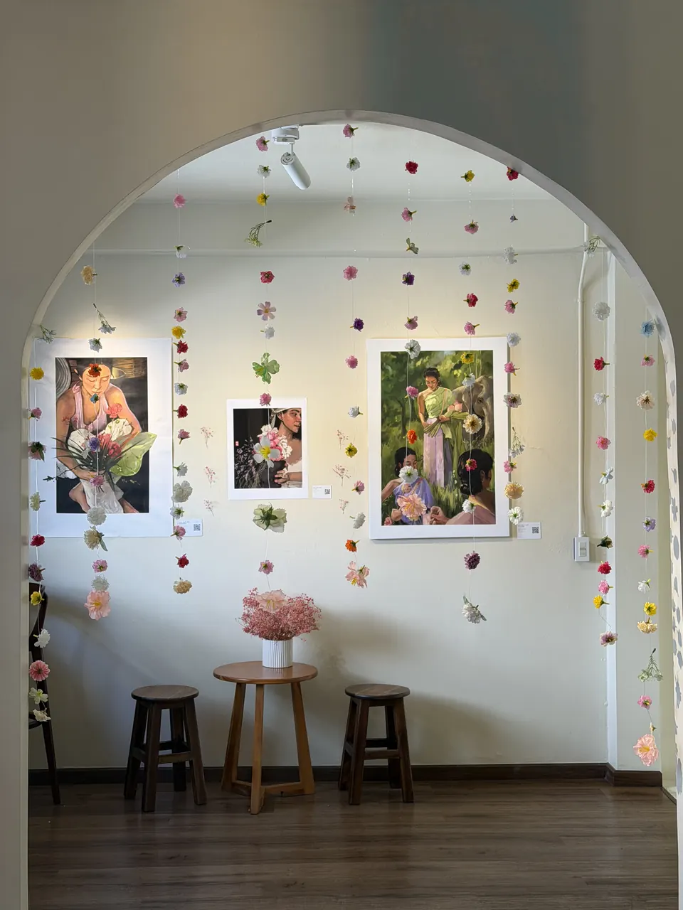
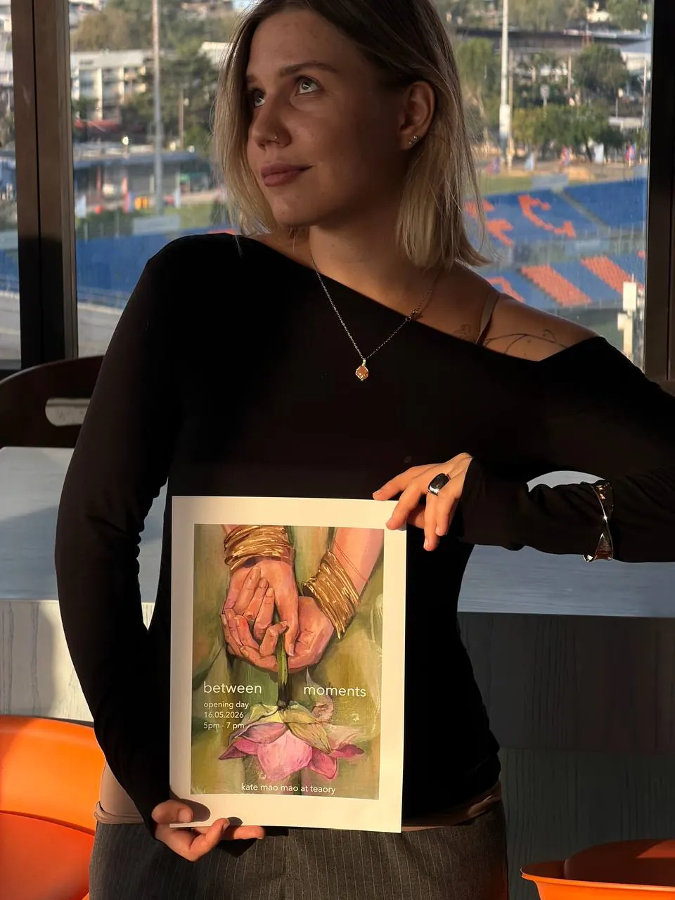
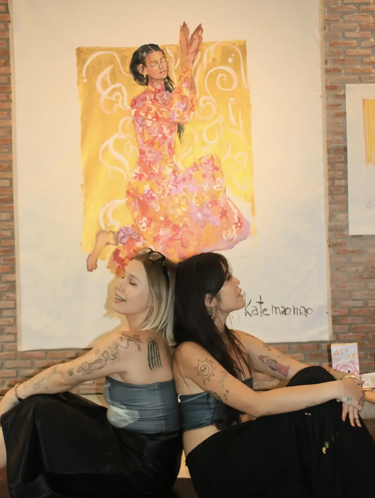
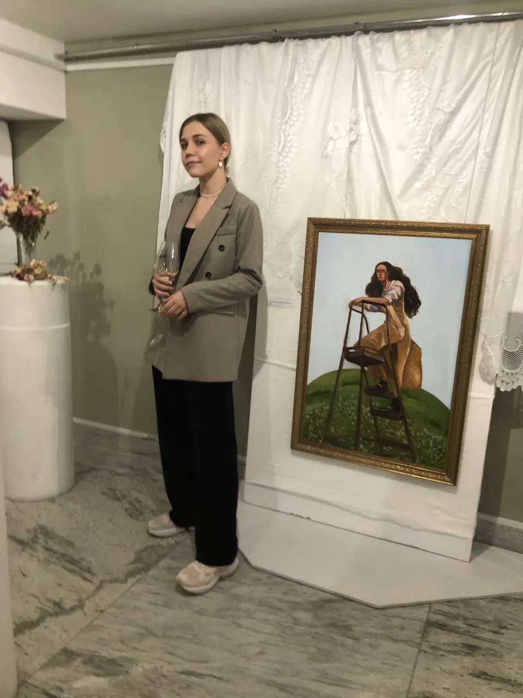
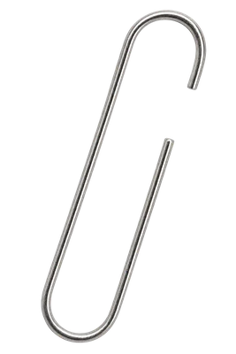

Выставки и мероприятия
Выставки
- 2026ПерламутрПодробнее
Пространство Shade,
Волгоград - 2026Between MomentsПодробнее
Персональная выставка
Teaory Teahouse, Бангкок, Таиланд - 2026Групповая выставкаПодробнее
515 Victory / 515 Event Hall,
Бангкок, Таиланд - 2022Точка зренияПодробнее
креативный кластер «Икра»,
Волгоград - 2021Быстрее, выше, сойдётПодробнее
Волгоградский музей
изобразительных искусств
имени И.И. Машкова, Волгоград
Арт Фестивали
- 2026Inner gardenПодробнее
Арт перфоманс,
Бангкок, Таиланд - 2022«А вы не видели Лосева?»
Волгоград
- 2022Арт-фестиваль
креативный кластер «Икра»,
Волгоград - 2019Арт-фестиваль
Волгоградская областная
библиотека для молодежи
2026
2026
персональная выставка
Between Moments
Teaory Teahouse, Бангкок, Таиланд
Моя первая персональная выставка, посвященная красоте мимолетных моментов и способности замечать их в повседневной жизни. Экспозиция объединила цифровые иллюстрации и живописные работы, вдохновленные жизнью в Таиланде, природой и тихими человеческими историями.
Работы серии

2026
арт-перформанс
Inner Garden
Yoga Shala, Бангкок, Таиланд
Совместный перформанс с тайской художницей, объединивший живопись, медитацию и взаимодействие со зрителями. Проект исследовал связь внутреннего состояния человека с творческим процессом и природой, превращая создание произведения искусства в коллективный опыт.

2026
выставка
Групповая выставка
515 Victory / 515 Event Hall, Бангкок, Таиланд


групповые выставки
Волгоград
Участница групповых художественных выставок в Волгограде, где были представлены мои ранние живописные и графические работы. Этот опыт стал важным этапом профессионального развития и первым знакомством с выставочной деятельностью.
- 2022Точка зрения
креативный кластер «Икра», Волгоград
- 2021Быстрее, выше, сойдёт
Волгоградский музей изобразительных искусств имени И.И. Машкова
Арт-встречи
Организую арт-встречи и творческие мастер-классы для людей с разным уровнем подготовки. Это пространство, где можно познакомиться с новыми техниками, развить творческое мышление и просто провести несколько часов в спокойной, вдохновляющей атмосфере. Для меня важно создавать не только занятия по рисованию, но и сообщество людей, объединенных интересом к искусству.


Ещё моменты


Давайте создадим
произведение вместе


Оставьте заявку и наш специалист
вас проконсультирует по всем вопросам!